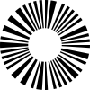
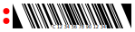

Extras
The following code samples create symbols in SVG format for some legacy symbologies.
| KarTrak |
The KarTrak system was designed to track rail cars in North America. Technical problems with the system led to it being abandoned but symbols can still be seen on some rolling stock.
|

|
| Sunburst |
The Sunburst symbol was one of unsuccessful applicants for the UPC standard. It was developed by Charecogn Systems Inc. and patented in 1969.
|

|
| CueCat |
The CueCat "cue" was developed by Digital Convergence Corporation for use with their
proprietary hardware in 2000. The encoding system is based on Code 128 and was soon
reverse-engineered. The product was ultimately a commercial failure.
|

|